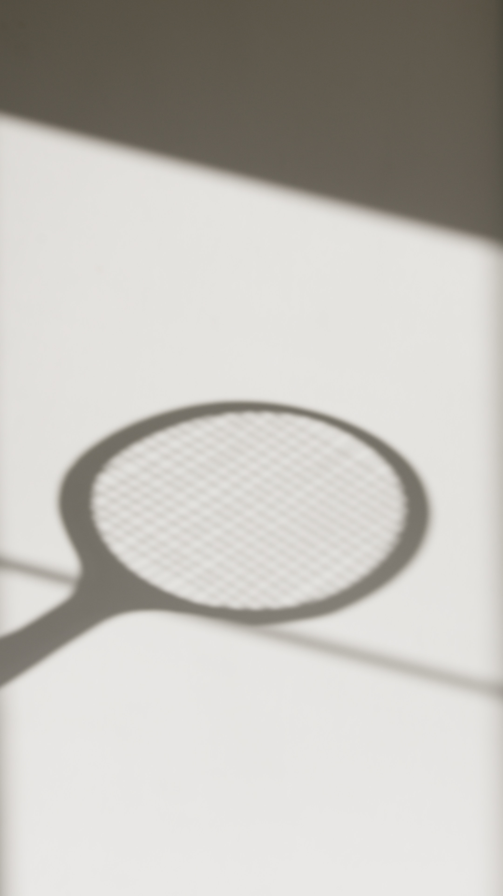
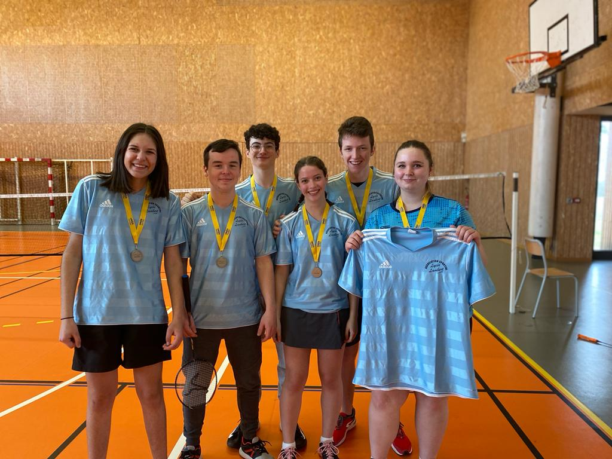

Qu'est ce que le badminton?
 Le badminton est un sport de raquette qui oppose soit deux joueurs (cela s'appelle le simple) soit deux equipes
de deux joueurs (c'est le double). Je vais vous pésenter le badminton dans le contexte scolaire c'est a dire le déroulement
d'un compétition d'unss. Dans notre cas lors d'une rencontre entre deux équipes 5 matchs ont lieux: simple homme, simple dame, double homme, double femme,
et enfin double mixe (c'est a dire que le double est constitué d'un homme et d'une femme). Il y a une particularité dans les compétitions de ce type c'est
que les matchs sont en 20 points et que les matchs se suivent. C'est a dire que le deuxième match commence avec le score du précedent. Par exemple un match peu commencer
à 9 - 20, et il s'arretera dès qu'une des deux équipes atteints 40points. Le gagnant est donc la première équipe à atteindre 100 points.
Le badminton est un sport de raquette qui oppose soit deux joueurs (cela s'appelle le simple) soit deux equipes
de deux joueurs (c'est le double). Je vais vous pésenter le badminton dans le contexte scolaire c'est a dire le déroulement
d'un compétition d'unss. Dans notre cas lors d'une rencontre entre deux équipes 5 matchs ont lieux: simple homme, simple dame, double homme, double femme,
et enfin double mixe (c'est a dire que le double est constitué d'un homme et d'une femme). Il y a une particularité dans les compétitions de ce type c'est
que les matchs sont en 20 points et que les matchs se suivent. C'est a dire que le deuxième match commence avec le score du précedent. Par exemple un match peu commencer
à 9 - 20, et il s'arretera dès qu'une des deux équipes atteints 40points. Le gagnant est donc la première équipe à atteindre 100 points.
Le début
Pourquoi ai-je décidé de parler de ce sport? le badminton est un sport que j'ai toujours beaucoup apprécié,
en effet durant mes quatre années de collège, j'ai pratiqué ce sport avec mes amis pendant la pause méridiénne,
ce n'étais un entrainement sérieux mais pour le plaisir. En première j'ai commencé ma première année en club,
encore avec un amis pour le plaisir, sans optique de compétition. Quand soudain par le fruit du hasard, le Lycée
decide de constituer une équipe de badminton pour faire les compétitions d'unss. Il y avait déja deux filles
qui elles avaient déjà beaucoup d'éxperience et de talent. Cependant il fallait des garçons pour que l'équipe soit
complète. J'ai finalement été pris dans l'équipe pour la compléter ainsi que deux secondes a qui nous avons expliqué
les règles dans le bus en direction de la première rencontre.

La compétition
Lors de la première rencontre l'équipe était un peu laborieuse car la grande partie était débutante Cependant
les filles ont permis de sauver l'équipe avec de bon conseil et en rattrapant les points manquants. finallement nous
sommes arrivés gagnant de cette première rencontre et étions qualifié pour la demi-finale puis la finale en cas de victoire.
Une fois arrivé sur le lieu de la deuxième rencontre nous nous sommes rendu compte que le niveau était bien plus élevé qu'a la
précedente rencontre. Mais nous étions déterminez à donner notre maximum, de toute façon nous n'avions rien à y perdre car l'équipe
ne devait même pas éxister. Alors à nouveau grâce a de bon conseil et de la détermination nous sommes arrivé en final contre une équipe
qui semblait avoir un gros écart de niveau par rapport aux autres équipes précédements affrontées. Nous avons malheureusement perdu
80 - 100. Nous sommes donc arrivé vice champion académique avec cette équipe qui sur le papier n'était pas favorite. Cela était une superbe
aventure qui m'a marqué, c'est pourquoi je vous la raconte. ps: nous avons peu de temps après appris que l'équipe contre laquelle nous avions perdu
est arrivée championne de France UNSS.
